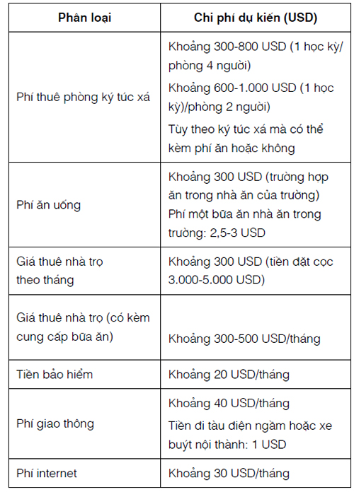
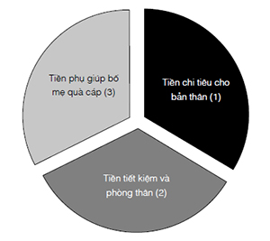
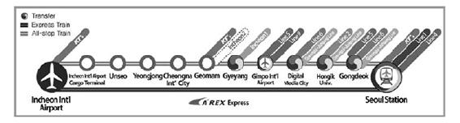
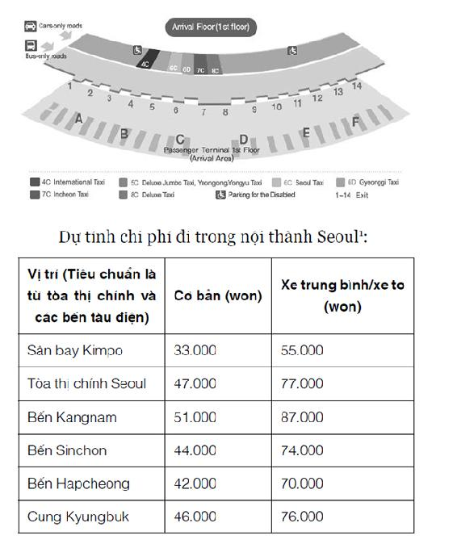
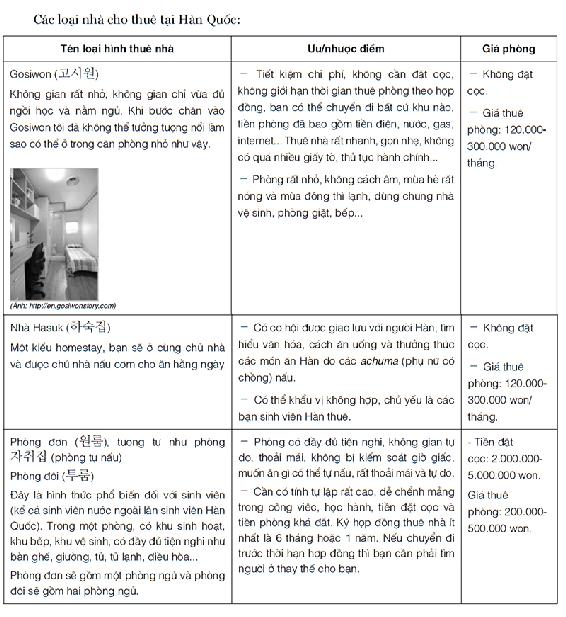

KẾ HOẠCH 2
Thời gian dành cho mỗi người đều như nhau,
mỗi ngày chỉ có hai mươi bốn tiếng.
Bạn có biết tận dụng tốt thời gian không,
điều đó sẽ quyết định sự thành bại của bạn trong tương lai.
Hãy quý trọng thời gian nhé!
Bởi thời gian đã trôi qua,
là sẽ rời xa bạn, xa mãi mãi.

Hai tỉ rưỡi hạt cát
Những hạt cát nhỏ xíu này đại diện cho thời gian. Thời gian không ngừng trôi, giống như những hạt cát nhỏ trong chiếc đồng hồ cát, liên tục chui qua khe hẹp chảy xuống dưới.
Mẹ nghe bố nói con muốn tham gia phỏng vấn ở đài phát thanh của trường. Mẹ cảm thấy vừa vui mừng vừa lo lắng, vì mẹ biết, thi tuyển người dẫn chương trình thì không chỉ thi viết khó, phỏng vấn khó, mà nếu có đạt, công việc cũng vô cùng vất vả.
Người dẫn chương trình đài phát thanh trường nhé, buổi sáng vẫn phải dậy sớm đi học, buổi chiều sau khi tan lớp còn phải ở lại họp để chuẩn bị tài liệu phát thanh ngày hôm sau. Người dẫn chương trình đài phát thanh của trường, không chỉ tự mình viết bản tin thật nghiêm túc và cẩn thận, mà còn phải thường xuyên luyện đọc diễn cảm để tránh xảy ra sự cố. Việc thi vào đài phát thanh vốn dĩ đã rất khó, nhưng cái khó hơn cả lại chính là công việc ở đây, nó cực kỳ vất vả con gái ạ. Mẹ rất lo không biết con sẽ sắp xếp công việc của đài phát thanh với việc học ở trường và tại lớp học thêm thế nào.
Đọc đến đây, có thể con sẽ nảy ra suy nghĩ: Con muốn thử một lần xem sao, nếu công việc thực sự quá nặng nhọc, quá vất vả thì con sẽ xin rút khỏi đài phát thanh. Nhưng suy nghĩ này hoàn toàn vô trách nhiệm.
Đài phát thanh là nơi những người có chung quan điểm, chung cách nghĩ cùng nhau làm việc. Nếu con vì bản thân mình mà vô duyên vô cớ rút khỏi đài phát thanh của trường, thì những người còn lại sẽ thế nào? Họ sẽ phải đảm đương thêm công việc của người từ chức. Thế thì thà ngay từ đầu con đừng tham gia.
Con gái Bong Hee thương yêu của mẹ, con không chỉ là vua đến muộn vì hay ngủ dậy trễ, mà còn là học sinh lười nhác thường xuyên quên làm bài tập, hơn nữa, lại còn có thêm cái tính chần chừ, vì vậy con càng phải chăm chỉ và cố gắng hơn những bạn khác mới được. Con nghĩ so với các bạn, mình có thể làm được nhiều việc hơn không? Mẹ hy vọng sau khi đọc những dòng thư này, con sẽ không quá buồn và thất vọng.
Nếu con vẫn kiên trì tham gia công việc ở đài phát thanh của trường, trước tiên con phải biết quý trọng thời gian. Điểm giống nhau ở những người lười biếng chính là không hiểu thời gian quan trọng đến mức nào. Con phải mau mau thay đổi thói quen lãng phí tài sản vô giá này, nếu không, nó sẽ trôi đi và chỉ để lại cho con những kí ức đầy hối tiếc.
Mẹ mong con hãy suy nghĩ cẩn thận, đọc xong thư này con còn muốn tiếp tục tham gia? Không có mẹ ở bên, con có thể tự mình làm được?
Nếu con dám đối đầu với những khó khăn này, kiên trì tham gia cuộc thi, mẹ nhất định sẽ nói cho con bí quyết để vượt qua kỳ thi vào đài phát thanh của trường.

“Mẹ đang không khỏe mà còn viết bức thư dài thế này. Mẹ viết vào lúc nào nhỉ?” Bong Hee đọc xong thì cảm thấy lo lắng.
Bong Hee là người hiểu rõ khuyết điểm của mình hơn ai hết. Cô bé rất sợ ai đó đọc được bức thư, vì cô bé cảm thấy đôi chút xấu hổ.
Đúng lúc ấy, một bàn tay nhẹ nhàng đặt lên vai Bong Hee, thì ra là bố.
“Sau khi biết con muốn tham gia kỳ thi vào đài phát thanh của trường, ngày nào mẹ cũng lo lắng.”
“Con biết ạ, con chỉ có cảm giác là mẹ không hiểu được lòng con. Chẳng phải mẹ đã từng làm ở đài phát thanh của trường sao?” Bong Hee phụng phịu nói.
“Mẹ đâu phản đối hoàn toàn, quyền quyết định là của con.” Bố thản nhiên trả lời.
“Vậy bố thấy thế nào ạ? Liệu con có thể làm tốt công việc ở đài phát thanh không?” Giọng Bong Hee trở nên uể oải.
Bố ngồi trên sofa, hỏi lại: “Con thấy thế nào?”
“Con chỉ thấy có chút khó khăn về mặt thời gian thôi ạ. Con không những phải đi học thêm mà còn phải làm bài tập về nhà. Ngay cả bản kế hoạch sinh hoạt hè con còn chưa từng làm theo nữa là. Bố cũng biết tính của con đấy, con không quan tâm, không hỏi, không có hứng đối với bất kỳ việc gì, con là ‘bình chân như vại’ mà. Ôiii!” Bong Hee nhún vai thở dài.
“Bởi thế con càng phải cố gắng hơn.” Bố đột nhiên đứng dậy, đáp ngắn gọn.
“Cố gắng hơn ấy ạ?” Bong Hee tò mò hỏi bố.
“Chẳng phải mẹ đã nói rồi đấy sao? Điều kiện đầu tiên để làm việc ở đài phát thanh là phải biết quý trọng thời gian.”
“... Dạ.”
“Con không tuân thủ kế hoạch là vì con vẫn chưa hiểu được tầm quan trọng của thời gian. Thời gian đã trôi đi sẽ không bao giờ quay trở lại, khoảnh khắc này cũng chỉ tồn tại ở thời điểm bây giờ mà thôi. Hôm nay chính là ngày cuối cùng, ngày mai sẽ không thể có ngày hôm nay nữa.”
“Ý bố là mỗi ngày chúng ta đều phải tạm biệt ‘hôm nay’ ạ?” Bong Hee mở to đôi mắt nhìn bố vẻ ngỡ ngàng.
“Có muốn bố nói cho con biết là tại sao không?” Bố đi đến trước mặt Bong Hee và đưa cho cô bé một chiếc đồng hồ cát nhỏ.
“Cái này thì sao ạ?” Bong Hee nhíu mày, nghiêng đầu hỏi bố.
“Bong Hee, bố cảm thấy mỗi người sinh ra đều có một chiếc đồng hồ cát của riêng mình. Con cũng có một chiếc đồng hồ cát giống hệt của bố. Vậy con nói xem những hạt cát nhỏ bé trong chiếc đồng hồ này là gì?”

Bong Hee chăm chú nhìn. Những hạt cát trong quả cầu thủy tinh bên trên đang chui qua một khe hẹp, từng hạt từng hạt rơi xuống quả cầu thủy tinh bên dưới.
“Từng hạt cát nhỏ này đều tượng trưng cho thời gian. Thời gian không ngừng trôi đi giống như những hạt cát liên tục chui qua khe hẹp này. Đống cát nhỏ trong quả cầu thủy tinh bên dưới gồm rất nhiều hạt nhỏ, nhưng chúng cũng chính là thời gian đã trôi qua, khoảng thời gian này mãi mãi sẽ không bao giờ quay trở lại.”
Bong Hee nghe xong liền gật đầu, dường như cô bé đã bắt đầu hiểu được dụng ý lấy đồng hồ cát của bố.
“Giả sử chúng ta sống được tám mươi tuổi, mỗi hạt cát đại diện cho một giây, như vậy trong chiếc đồng hồ của chúng ta sẽ có khoảng hai tỉ rưỡi (2.522.880.000) hạt cát.”
“Hai tỉ rưỡi hạt? Nhiều thế cơ ạ?”
Nhìn vẻ ngạc nhiên của Bong Hee, bố cười đáp: “Nghe thì có vẻ nhiều đúng không? Nhưng ngay trong lúc này, cát vẫn không ngừng rơi, điều đó có nghĩa là cuộc sống của chúng ta đang ngày một ngắn đi. Mỗi phút là sáu mươi hạt cát, mỗi ngày là 86.400 hạt cát, cát đã rơi xuống sẽ không bao giờ quay trở lại, vĩnh viễn biến mất.”
“À! Cát rơi xuống hết, vậy kết quả không phải...” Giọng Bong Hee trầm xuống.
“Đúng thế con gái ạ. Cát một ngày nào đó sẽ rơi xuống hết, con người đến một ngày nào đó cũng sẽ chết đi, chẳng ai có thể sống trường sinh bất lão. Nhưng con người thật kỳ lạ, Bong Hee biết mình khó tránh khỏi cái chết, vẫn vô tâm lãng phí thời gian, vẫn còn nói những câu như ‘ngày mai tính tiếp’, ‘sau này hãy nói’. Thời gian mà chúng ta có không phải là vĩnh cửu, đến một ngày chúng ta sẽ dùng hết, thời khắc đó chính là giây phút cuối cùng của cuộc đời.”
Trong khi bố nói, cát trong đồng hồ vẫn liên tục chảy xuống. Thời gian của Bong Hee vẫn không ngừng trôi đi, đồng thời khoảng cách tới thời khắc cuối cùng của cuộc đời cũng ngày càng ngắn.
Bong Hee khóc lóc nhìn bố: “Hu hu, bố ơi, bây giờ còn bao nhiêu hạt cát trong chiếc đồng hồ của con? Bao nhiêu hạt cát đã mất đi rồi hả bố?”
“Đương nhiên là còn rất nhiều so với của bố. Số hạt cát còn lại của con nhiều hơn rất nhiều so với những hạt đã mất, con hãy yên tâm.”
“Con cảm thấy tiêng tiếc bố ạ.”
“Những gì đã qua cũng qua rồi, chẳng có cách nào quay lại, con cũng không cần cảm thấy hối tiếc, từ giờ hãy quý trọng thời gian là được rồi.” Bố khẽ vỗ vai Bong Hee an ủi.
Bong Hee chợt cảm thấy nếu quỹ thời gian của mình có thể nhìn thấy bằng mắt thường như đồng hồ cát thì tốt biết bao. Cũng như thường xuyên quên tầm quan trọng của không khí, con người thường quên và xem thường tầm quan trọng của thời gian.
“Con chưa hiểu phải sắp xếp thời gian hợp lý thế nào?”
Bố liền hỏi lại Bong Hee: “Con nghĩ tiêu tiền như thế nào mới hợp lý?”
“Tiền ấy ạ? Tiền có thể dùng vào việc ăn uống và vui chơi, còn dùng để mua quần áo, chẳng phải tiền tồn tại là để tiêu vào những việc đó sao ạ?”
“Ừ, đúng vậy đấy con. Nhưng nếu tiền đều dùng vào việc ăn uống, vui chơi và mua quần áo thì tại sao có những người giàu lại trở nên nghèo rớt mùng tơi. Cũng như cách nhìn không giống nhau về tiền bạc giữa người biết quản lý tài sản và người không biết quản lý tài sản, người biết quản lý tài sản đầu tư tiền bạc vì tương lai, cách nhìn về thời gian của người thành công và kẻ thất bại cũng rất khác nhau, người thành công đầu tư thời gian cho tương lai.”
Bố nói tiếp: “Thực ra bố cũng chưa phải là người biết sắp xếp thời gian hợp lý. Tuy nhiên, bố đã hiểu được tầm quan trọng của thời gian, nhưng hành động thì luôn không theo kịp kế hoạch. Chẳng phải mẹ thường nói con chính là bản sao của bố đấy ư? Mẹ còn bảo bố là Đức Vua ‘bình chân như vại’. Bong Hee, hai bố con mình cùng cố gắng mang lại niềm vui bất ngờ cho mẹ nhé.”
Buổi tối, Bong Hee ngồi trước máy tính viết email cho mẹ. Cùng lúc đó, những hạt cát trong đồng hồ vẫn không ngừng rơi. Cô bé chợt nhận ra thời gian giống như dòng nước, trôi đi rất nhanh, và thế là trong lòng bắt đầu cảm thấy sốt ruột.
“Bong Goo ngủ chưa?” Bong Hee nhìn Bong Goo, cậu bé đã ngủ ngon lành.
Bong Hee véo nhẹ má em trai: “Thằng nhóc này! Còn mong mẹ không sinh chị à? Em thương mẹ không thể trở thành người dẫn chương trình đến thế sao? Nhất định chị sẽ thực hiện được ước mơ của mẹ. Cứ đợi mà xem!”
Trong đêm khuya vắng vẻ, Bong Hee đã hiểu ra tầm quan trọng của thời gian, và đêm của Bong Hee cũng đang chầm chậm trôi đi.
KẾ HOẠCH BÍ MẬT 2
Thư con gái gửi mẹ!
NGƯỜI THÀNH CÔNG SẮP XẾP THỜI GIAN HỢP LÝ NHƯ THẾ NÀO?
Mẹ ơi, con là con gái Bong Hee đáng yêu nhất trần đời của mẹ đây.
Bố nói với con rằng người không biết quản lý tài sản và người biết quản lý tài sản có cách nhìn khác nhau đối với tiền bạc, bố bảo người biết quản lý tài sản đầu tư tiền bạc cho tương lai. Ví dụ, đầu tư cho một doanh nghiệp hoặc đầu tư vào việc học tập để mở rộng kiến thức...
Bố còn nói thời gian chính là tiền bạc. Cũng như người biết quản lý tài sản và người không biết quản lý tài sản có cách nhìn không giống nhau về tiền bạc, người thành công và kẻ thất bại cũng có cách nhìn khác nhau về thời gian. Người biết quản lý tài sản đầu tư tiền bạc cho tương lai, người thành công cũng đầu tư thời gian vì tương lai. Nói cách khác, người thành công đầu tư thời gian vào những việc có thể giúp họ thực hiện ước mơ của mình.
Cuối cùng, con sẽ nói cho mẹ nghe câu nói giá trị nhất của bố:
"Quý trọng hiện tại, ngày mai tươi sáng sẽ vẫy tay đón
chào con. Lãng phí hiện tại, tương lai ảm đạm sẽ dang tay ôm con vào lòng."
CẨM NANG PHÉP THUẬT THỰC HIỆN ƯỚC MƠ
Bạn hãy ghi lại những việc làm lãng phí thời gian của ngày hôm nay. Tìm nguyên nhân lãng phí thời gian và thay đổi thói quen xấu này ngay nhé!
Lời hứa với mẹ
“Bong Hee này, thi phỏng vấn của đài phát thanh chủ yếu là đọc diễn cảm bản tin.” Bong Hee theo lời mẹ, bắt đầu luyện đọc diễn cảm bản tin thiếu nhi.
“Kết... kết thúc chưa? Thế nào rồi?” Bong Hee hổn hển chạy vào hành lang tầng một. “Phùuu! May quá!” Cô bé thở phào nhẹ nhõm.
Các học sinh ngồi xếp hàng trên ghế dọc hành lang đài phát thanh NBS. Không một ai gây ồn ào, càng không có tiếng cười đùa nói chuyện. Xem ra, các bạn nhỏ đều đang rất căng thẳng, vài bạn còn có bố mẹ đi cùng.
Cặp chị em song sinh Ni Na và Na Na mặc áo sơ mi trắng cùng váy có dây đeo trông thật xinh xắn.
“Ma Bong Hee, sao bây giờ cậu mới tới? Bọn tớ cứ tưởng cậu không đến nữa đấy!” “Cậu sợ người khác không biết cậu là vua đi muộn hay sao mà ngay cả thi phỏng vấn ở đài phát thanh cũng đến muộn hả?” Ni Na và Na Na kẻ tung người hứng nói với Bong Hee.
“Phù, tớ vừa cọ xong nhà vệ sinh. Vì tìm cô giáo chủ nhiệm đến kiểm tra, tớ đã phải chạy một vòng khắp tòa nhà này đấy. Phù phù, kết thúc chưa?”
“Xời! Trước khi phỏng vấn có lẽ cậu sẽ mắc bệnh tim mà chết mất.”
Đúng lúc này, một người trong phòng thu ngó đầu ra gọi: “Ma Bong Hee lớp 5/3!”
“Có ạ!” Bong Hee trả lời rồi nhanh chóng bước vào trong.
Cô bé được dẫn vào studio. Đứng trong phòng thu, qua ô cửa kính lớn, Bong Hee có thể nhìn thấy các anh chị lớp sáu và các thầy cô ở đài phát thanh đang nhìn mình. Bong Hee bỗng thấy mình chẳng khác nào chú chuột bạch trong phòng thí nghiệm.
“Phù, phù! Điều này lại khiến mình căng thẳng được sao? Mình là Ma Bong Hee ‘bình chân như vại’ cơ mà!” Bong Hee hít một hơi thật sâu, tự trấn an mình, nhưng chân tay cô bé dường như không chịu nghe lời, cứ run lên bần bật, mà lại ngày càng run.
“Ma Bong Hee, em thấy tờ giấy trên bàn không?” Giọng nói của cô giáo vang lên. Cô mang kính gọng đỏ, người hơi mập, nhưng giọng nói lại rất rõ ràng, trong trẻo: “Em hãy vào vai một người dẫn chương trình, đọc diễn cảm nội dung trong đó, đây chính là nội dung bài thi của đài phát thanh.”
Bong Hee đưa mắt lướt nhanh toàn bộ nội dung.
“Ồ! Cái này là...”
Bong Hee tròn mắt nhìn nội dung bài thi, mẹ nói đúng! Lúc này, cô bé cảm thấy vô cùng ngạc nhiên, và bất giác mỉm cười.
“Bong Hee này, thi phỏng vấn của đài phát thanh chủ yếu là đọc diễn cảm bản tin. Mẹ nghe người khác bảo thi phỏng vấn ở đài phát thanh của trường tiểu học cũng là đọc diễn cảm nội dung bản tin thiếu nhi. Con chỉ cần phát âm rõ ràng, đọc chính xác, diễn cảm, không sai sót là được. Còn một điều nữa con cũng không được quên, thỉnh thoảng phải thật tự tin nhìn vào máy quay rồi mỉm cười, con hiểu chưa?”

Trước khi thi, Bong Hee theo lời mẹ, bắt đầu luyện đọc diễn cảm bản tin thiếu nhi. Bố thấy Bong Hee cố gắng như vậy cũng đã cho cô bé nhiều lời khuyên bổ ích. Bố nói khi luyện tập cứ coi bánh ngọt sữa, bánh bao nhân đậu, bánh bao rau là thính giả, phần nào giảm bớt tâm lý sợ hãi.
Khi mới bắt đầu luyện đọc, Bong Hee chẳng đọc nổi một câu cho ra hồn. Nhưng sau khoảng mười, hai mươi lượt, cô bé đã có thể đọc lưu loát và chính xác từng từ.
“Ma Bong Hee, em đã sẵn sàng chưa?”
“Thưa, rồi ạ!” Bong Hee ngẩng cao đầu nhìn vào máy quay và cười một cái. Những học sinh lớp sáu nhìn biểu hiện gượng gạo của cô bé thì đều bật cười.
Giống như khi luyện tập, Bong Hee phát âm rõ ràng, chính xác và diễn cảm bản tin. Giọng đọc lúc đầu còn run dần dần trở nên rành rọt, trong trẻo.
“Thế nào? Cậu đọc thế nào? Cô giáo có nghiêm khắc không? Cậu có nhìn thấy anh trưởng nhóm không? Lúc tớ đọc ấy, chẳng nhìn rõ chữ nào cả. Ôi, không nhắc tới khoảnh khắc đó nữa!” Bong Hee vừa bước từ đài phát thanh ra, Ni Na và Na Na đã vội vây quanh, hỏi tới tấp.
Bong Hee trả lời: “Chóng cả mặt.”
“Có cả cảm giác đó sao. Bong Hee, ngay cả bài đọc cậu cũng không đọc được á? Chắc cậu căng thẳng lắm nhỉ! Bọn tớ hiểu. Hẳn là cậu thất vọng lắm, không trở thành người dẫn chương trình được thì phải làm sao đây?” Ni Na và Na Na vừa nói, vừa nhìn Bong Hee thông cảm.
Bỗng nhiên, Bong Hee chau mày kêu toáng lên: “Không phải cuộc thi làm mình chóng mặt, mà chính là các cậu đấy. Các cậu nói nhiều quá làm tớ ong hết cả đầu rồi!”
“Chuẩn bị đến giờ thi viết, địa điểm thi ở lớp 1/2. Các em mau theo cô!”
Bong Hee thoải mái và tự tin đi thẳng đến lớp 1/2, Ni Na và Na Na ngạc nhiên nhìn theo.
“Sau đây, các em hãy viết một bản tin phát thanh. Giả sử các em là người dẫn chương trình, hãy dựa vào trí tưởng tượng của mình để viết một bản tin, số lượng từ không hạn chế.” Cô giáo vừa phát giấy, vừa nói với các bạn học sinh.
“Trời đất ơi!” Tất cả đều thở dài thườn thượt, có lẽ từ trước tới giờ chưa ai từng nghĩ tới việc phải viết cái gì.
Và Bong Hee một lần nữa kinh ngạc vì mẹ lại đoán trúng.
Trong khi các bạn khác còn đang vò đầu suy nghĩ thì Bong Hee đã hạ bút viết một mạch. Chưa đầy hai mươi phút sau, cô bé hoàn thành xong bài thi của mình.
“Em xong rồi. Em có thể nộp bài và ra khỏi phòng không ạ?” Bong Hee hỏi giám thị. Ngay lập tức, các bạn học sinh khác đều dừng bút, nhìn cô bé. Cô giáo coi thi cũng ngạc nhiên nhìn Bong Hee.
Trong khi đó, Ni Na và Na Na lại nhìn bạn mình cảm thông: “Bỏ cuộc rồi”, “Thật tội nghiệp”.
Chiều hôm sau, các học sinh đều tập trung trước cửa đài phát thanh NBS để xem danh sách học viên mới.
“Có đỗ không?” “Có, em đỗ rồi! Chị cũng đỗ nữa này! Bọn mình đều đỗ rồi!” Na Na xem bảng danh sách xong liền reo lên. Ni Na cũng nhảy cẫng lên vui sướng.
“Ha ha ha ha! Mình biết thể nào mình cũng đỗ mà.” Bong Hee reo to. Trong danh sách gồm năm học viên mới của đài phát thanh có thể nhìn thấy rất rõ cái tên “Ma Bong Hee”.
“Ni Na, có lẽ chị là người đứng đầu danh sách. Nhìn này! Ni Na, Na Na..., tên của chị đứng đầu tiên, sau đó là tên em. Ma Bong Hee đứng thứ hai từ dưới lên, chắc là cậu ấy được vớt rồi.” Na Na xúc động, mắt bắt đầu rưng rưng lệ.
“Bong Hee này, cậu cảm thấy thế nào khi đứng thứ hai từ dưới lên? Mà đỗ là được rồi, cậu cũng không nên quá thất vọng. Bọn mình hãy cùng cố gắng nhé!” Na Na nắm lấy tay Bong Hee an ủi.
Bong Hee nhịn không nổi đành phải kêu lên: “Này, hai cậu! Danh sách chẳng phải xếp theo bảng chữ cái sao?”
“À! Thì ra là thế.” Ni Na và Na Na cười ngượng nghịu.
Bong Hee ngồi trên ghế đá cạnh sân vận động, gọi điện cho mẹ.
“Mẹ ơi, con đỗ rồi!”
“Chúc mừng con! Con đúng là con gái yêu của mẹ!”
Mẹ cười, giọng vui lắm.
“Nhưng mà mẹ ơi, con rất ngạc nhiên. Cách ra đề ấy, mẹ nói đều trúng hết! Tại sao mẹ lại biết? Mẹ đúng là thầy bói!”
“Ha ha, sau hai mươi lăm năm, đề thi của đài phát thanh vẫn vậy, chẳng hề thay đổi.”
“Là thế nào hả mẹ?”
“Trước đây mẹ cũng là học viên của đài phát thanh trường. Đề thi hôm nay của con giống hệt đề thi hai mươi lăm năm trước của mẹ.”
“A, thì ra là thế! Ha ha ha, bây giờ con trở thành ‘sư muội’ của mẹ rồi.” Bong Hee cười khoái chí.
“Nhưng Bong Hee này, con không quên lời hứa với mẹ chứ? Mẹ đã thực hiện lời hứa với con, con cũng phải thực hiện lời hứa với mẹ đấy nhé.”
“Vâng ạ, đương nhiên là con sẽ tuân thủ lời hứa, cố gắng sống có kế hoạch!” Bong Hee tự tin nói.
“Bong Hee này, mẹ biết sau này con sẽ rất mệt. Tuy bây giờ con chưa thể bỏ ngay những thói quen xấu của mình, nhưng dần dần sẽ được thôi.”
Bong Hee khẽ gật đầu: “Mẹ ơi, mẹ hãy tin con, con gái Ma Bong Hee ‘bình chân như vại’ của mẹ nhé!”
“Ừ, mẹ sẽ thường xuyên gọi điện cho con, đốc thúc con, hãy chuẩn bị tâm lý đi cô nương.” Giọng mẹ nghe đã thấm mệt.
“Á! Cứ thế này, có khi nào mẹ lại bay vù từ điện thoại ra không nhỉ?” Bong Hee cố tình nói khoác để mẹ vui.
Hai mẹ con cùng cười hạnh phúc.

Cô giáo siêu-siêu nghiêm khắc
Nếu em nào định bỏ cuộc giữa chừng thì hãy nói ngay với cô. Dù sao thì vẫn còn rất nhiều người muốn tham gia.
Cạch, cạch, cạch!
Tiếng ngón tay gõ xuống bàn phá tan bầu không khí yên lặng trong phòng làm việc tại đài phát thanh của trường.
Ngồi trong phòng có Bong Hee, cặp song sinh Ni Na, Na Na và hai bạn nam khác. Đây đều là những học viên mới của đài phát thanh.
Bong Hee và hai chị em Ni Na, Na Na đều xin thi tuyển làm người dẫn chương trình, hai bạn nam xin vào vị trí quay phim và phụ trách âm thanh. Tất cả đều ngồi trật tự, đầy căng thẳng.
Cạch, cạch, cạch!
Tiếng ngón tay gõ xuống bàn lại vang lên.
Hình như cô định nói điều gì, nhưng rồi lại cúi xuống trầm ngâm. Cô vừa suy nghĩ, vừa không ngừng gõ tay xuống bàn. Hôm nay cô đeo kính gọng đỏ trông rất nghiêm.
“Chúc mừng các em trở thành thành viên mới của đài phát thanh NBS.” Cô giáo nghiêm nghị nói. “Trường chúng ta là trường tiểu học trọng điểm với ba mươi lăm năm lịch sử, trong đó nổi tiếng nhất là đài phát thanh, có thể nói đó là biểu tượng của trường tiểu học Naeng Cheon. Các em nhìn thấy những chiếc cúp kia không?”
Các bạn học sinh nhìn theo hướng cô chỉ. Trên bức tường sau phòng làm việc của đài treo rất nhiều cúp, huân chương, huy chương to nhỏ đủ kích cỡ, trông rất hoành tráng.
“Có thể các em chưa biết, rất nhiều người dẫn chương trình và ngôi sao hiện nay đều tốt nghiệp từ trường chúng ta. Các bậc tiền bối của các em đều là những người rất nỗ lực, họ luôn tự hào vì từng là thành viên của đài phát thanh trường.”
Ai nấy đều quay lại nhìn cô và gật đầu liên tục. Cô nhìn chăm chú vào mắt từng bạn nhỏ, nghiêm giọng: “Tất cả đều do chúng ta không ngừng cố gắng mới giành được, nếu không nỗ lực phấn đấu các em sẽ bị đào thải. Công việc ở đài phát thanh trường rất nặng nhọc, không chỉ tốn thời gian, sức lực mà còn hao tổn tâm trí. Cô nghĩ các em đều đã được nghe rồi, rất nhiều học sinh làm việc tại đài phát thanh phải bỏ cuộc giữa chừng. Và vì các em đã lựa chọn công việc này thì dù có chuyện gì xảy ra cũng phải dũng cảm đối mặt, gắng hoàn thành nhiệm vụ. Đây không phải là sân chơi của các em, mà là đài phát thanh. Các em phải nhớ, chúng ta là trung tâm khuấy động không khí của cả trường. Nào, đã rõ chưa?”
Giọng cô sang sảng vang khắp phòng, Bong Hee thấy lạ là những tấm kính lại không bị rung lên vì giọng nói này.
“7 giờ 40 phút hàng ngày, các em đều phải chuẩn bị phát thanh buổi sáng tại phòng làm việc, thứ ba và thứ tư hàng tuần họp thảo luận chủ đề và lên chương trình. Các em là học viên mới, nên phải học hỏi rất nhiều, ví dụ như cách sử dụng một số thiết bị máy móc trong phòng làm việc, học viết bản tin phát thanh, luyện phát âm và đọc diễn cảm..., thời gian đầu tạm thời sẽ vào 3 giờ chiều các ngày thứ hai, thứ tư, thứ sáu. Mỗi tuần còn phải nộp một bản tin phát thanh! Cô sẽ xây dựng đài phát thanh của trường mình trở thành đài phát thanh ưu tú nhất, nên các em hãy cố gắng trở thành người dẫn chương trình, người quay phim và người phụ trách âm thanh ưu tú nhất, các em rõ chưa?”
“Rõ rồi ạ.” Những tiếng trả lời gượng gạo.
Lúc này Bong Hee cảm thấy rất rõ áp lực, như thể bị một hòn đá to đùng đè lên ngực vậy.
“Giọng của các em ngày càng nhỏ, khí thế như thế này có đủ để trở thành người ưu tú nhất không? Rốt cuộc, các em có lòng tin không?”
“Có ạ!” Các bạn nhỏ cùng đồng thanh.
“Buổi họp hôm nay đến đây kết thúc, bắt đầu từ ngày mai chúng ta sẽ cùng nhau cố gắng nhé!”
Cô giáo vừa đứng dậy, các bạn học sinh cũng lần lượt rời khỏi chỗ ngồi. Đến cửa cô bỗng quay lại nói: “Đúng rồi! Nếu em nào định bỏ cuộc giữa chừng thì hãy nói ngay với cô. Dù sao thì vẫn còn rất nhiều người muốn tham gia. Sau này đừng ai nói với cô những câu đại loại như ‘em rất bận, không có thời gian, phải đi học thêm, mẹ em thế này thế nọ’ đấy nhé, những câu nói đó đối với cô chỉ là cái cớ. Nếu không có thời gian, các em có thể lập một bản kế hoạch, sau đó cố gắng thực hiện theo thì chắc chắn có thể hoàn thành nhiệm vụ. Các anh chị lớp sáu ở đài phát thanh đều làm như thế, các anh chị ấy không những có thành tích học tập xuất sắc mà còn hoàn thành rất tốt công việc được giao.”

Nói xong, cô quay người, rời khỏi phòng làm việc.
“Ôi! Tớ chết mất, không thở nổi nữa rồi. Hùuu!” Na Na nằm vật ra bàn thở hổn hển.
“Nhanh cứu tớ với! Tớ không động đậy được rồi. Các cậu nhìn thấy mồ hôi trên trán tớ không? Toàn thân tớ cứng đơ không nhúc nhích được nữa.” Ni Na rên rỉ.
Các bạn nam cũng thi nhau lắc đầu: “Chẳng khác gì quân đội! 7 giờ 40 phút đã phải đến trường; thứ hai, thứ tư, thứ sáu hàng tuần còn phải luyện phát âm; thứ ba, thứ năm còn phải họp nữa. Thế thì chẳng phải thời gian hàng ngày đã kín hết rồi sao?”
“Thật không hổ danh là cô giáo siêu-siêu nghiêm khắc.”
“Cô giáo siêu-siêu nghiêm khắc?” Các bạn khác đồng thanh hỏi.
“Ừ! Tớ nghe nói cô ấy làm việc cực kỳ chăm chỉ và còn vô cùng nghiêm khắc nữa cơ. Khi làm việc, cậu mắc lỗi gì cô đều mắng ngay. Thành tích học tập cũng vậy, giảm sút là cũng bị ăn mắng như thường.”
“Ôi trời! Chúng mình chết chắc rồi.” Ai nấy đều than ngắn thở dài.
“Bong Hee, cậu không đi dọn nhà vệ sinh à?” Ni Na hỏi.
“Cô giáo chủ nhiệm bảo từ hôm nay tớ không phải làm vệ sinh nữa.”
“Thấy chưa! Bọn tớ nói đúng không? Bọn tớ chính là chúa cứu thế của cậu còn gì.”
“Chúa cứu thế á?”
“Chính bọn tớ giơ tay ra cứu cậu thoát khỏi tình trạng tuyệt vọng mà. Cậu không cảm ơn bọn tớ à? Không vui à? Có phải đang cảm thấy rất nhẹ nhõm không?” Ni Na và Na Na thao thao nói.
“Hơn 7 giờ sáng tớ đã phải đến trường, không biết mấy giờ tối mới về đến nhà, đây chính là cách các cậu cứu tớ à? Các cậu cứu một lần nữa thì tớ có lẽ kiệt sức mà chết mất!” Bong Hee toàn thân rã rời ngả người lên ghế, uể oải nói. “Tớ quyết định đúng hay sai nhỉ? Tớ thật sự không thể tưởng tượng được cuộc sống của tớ sau này sẽ ra sao, ôi, tớ có cảm giác như mình vừa nhảy vào lửa vậy.”
Ba cô bé chẳng biết làm gì thi nhau thở dài thườn thượt.
Bong Hee về đến nhà, vừa mở cửa ra thì một mùi chua chua đã xộc ngay vào mũi.
“Mùi gì vậy?” Bong Hee bịt mũi chạy vào phòng khách.
Bong Goo đang đeo tai nghe ngồi trước máy vi tính mải mê chơi điện tử. Cậu nhóc chơi hăng đến nỗi không hề hay biết chị gái đã về.
Phòng khách chẳng khác nào bãi chiến trường, còn bừa hơn cả đống rác. Nào là gối, nào là chăn, rồi quần áo, cả bánh ăn dở và bát đũa bẩn, tất cả đều chất đống ngổn ngang.
“Trời ơi! Khác nào một đống rác!”
Bong Hee chau mày đi về phía bếp, nơi bốc mùi chua nồng nặc. Ở đây còn kinh khủng hơn phòng khách nhiều, chỗ nào cũng có đồ ăn thừa từ mấy hôm trước. Nếu mẹ nhìn thấy cảnh này chắc chắn sẽ nổi trận lôi đình.
Bong Hee bắt đầu bỏ đồ ăn đã mốc vào thùng rác, nhưng một lúc sau cô bé không thu dọn nữa, vì những thứ cần phải thu dọn quả thực quá nhiều.
“Chị, chị về lúc nào thế?” Bong Goo lên tiếng khi vừa nhìn thấy chị gái. “Chị còn chưa đi học thêm à?”
“Chết rồi!” Bong Hee vội vàng nhìn đồng hồ, bây giờ đã là 6 giờ hơn, lớp học thêm cũng đã sắp kết thúc.
“Nếu mình không ở lại tán gẫu với Ni Na và Na Na thì đã có thể đến lớp rồi.”
Mấy hôm trước vừa mới hứa với mẹ là phải đến lớp học thêm đúng giờ, ấy vậy hôm nay Bong Hee đã lại thất hứa.
Reng... reng... reng!
Chuông điện thoại reo.
“Bong Hee, con... con lại bỏ học à?” Mẹ gay gắt hỏi.
“Họp đài phát thanh kết thúc muộn, nên...”
“Họp xong con phải chạy ngay đến lớp học chứ. Ai bảo con cứ đủng đà đủng đỉnh? Con không thể làm nhanh hơn à? Chẳng phải con đã hứa với mẹ là sẽ chăm chỉ đi học thêm sao? Con mới hứa cách đây có mấy ngày mà hôm nay đã không thực hiện rồi?” Giọng mẹ như hết hơi, có lẽ mấy ngày qua sức khỏe của mẹ không được tốt cho lắm.

“Con dọn dẹp nhà chưa?”
“...”
“Ăn tối chưa?”
“...”
“Học bài chưa?”
“...”
“Làm thế nào bây giờ? Con chẳng lo lắng cái gì cả, không sốt ruột à? Sao con vẫn giữ bộ dạng ‘bình chân như vại’ thế? Một mình bố ở cửa hàng bận tối mắt tối mũi, con đã không giúp gì được cho bố thì cũng không nên để bố thêm rối, con phải tự giải quyết lấy việc của mình chứ!” Mẹ vừa nói vừa thở mệt nhọc, rồi im lặng một lúc.
“Bong Hee.” Giọng mẹ bỗng trở nên dịu dàng.
“Dạ.”
“Mẹ biết, việc gì con cũng muốn làm tốt, không chỉ muốn làm tốt công việc ở đài phát thanh trường, mà còn mong muốn nâng cao thành tích học tập, lại muốn giúp bố công việc nhà nữa, đúng không? Con rất hiểu bản thân muốn làm gì nhưng không biết làm thế nào, đúng không?”
“Dạ.”
“Mẹ xin lỗi con gái. Mẹ không thể ở bên cạnh để giúp đỡ con, mẹ xin lỗi.” Giọng mẹ nghèn nghẹn, Bong Hee cũng cảm thấy tim mình nhói lên.

“Không sao mẹ ạ, con chỉ mong mẹ sớm khỏi bệnh thôi. Con có thể tự làm được, mẹ yên tâm đi.”
“Như tình hình hiện nay thì chắc chắn con không thể làm tốt được bất kỳ việc gì. Chẳng phải mẹ đã từng nói rồi sao? Lên kế hoạch và sống theo kế hoạch. Bây giờ, đối với con, điều quan trọng nhất không phải là mẹ, cũng không phải bố, mà là kế hoạch.”
“Con cũng biết điều đó nhưng con không biết phải lập kế hoạch như thế nào. Mẹ giúp con lập một bản kế hoạch nhé? Hồi con học lớp ba, mẹ cũng đã từng giúp con rồi mà.” Bong Hee lúng búng đề nghị.
“Đúng thế. Cho nên lúc trước mẹ còn nghĩ sẽ giúp con xây dựng một bản kế hoạch, bởi vì rất nhiều bà mẹ khác cũng làm như thế.”

“Nhưng tại sao bây giờ mẹ lại không giúp con? Mẹ có biết Ni Na và Na Na không? Mẹ của các bạn ấy cũng giúp các bạn ấy lập kế hoạch đấy. Mẹ của nhiều bạn còn giúp sắp xếp thời gian học thêm, thời gian làm bài tập rồi quy định thời gian chơi và thời gian xem ti vi nữa. Các bạn ấy đều thực hiện theo sự sắp xếp của mẹ, con thấy như vậy thật là tốt.” Bong Hee nói bằng giọng giận dỗi, cũng có thể là cô bé hơi nhớ mẹ đấy mà.
“Ôi!” Mẹ thở nhẹ một tiếng. “Bong Hee này, con không muốn trở thành người lớn à? Con muốn mãi mãi là một cô bé học sinh tiểu học sao?” Mẹ bình tĩnh hỏi Bong Hee.
“Đương nhiên là con muốn trở thành người lớn thật nhanh, con ghét nhất bị người khác nói là đồ trẻ con, mẹ cũng biết mà.”
“Vậy theo con, sự khác nhau giữa người lớn và trẻ con là gì?”
Bong Hee rất đỗi ngạc nhiên khi tự dưng mẹ lại hỏi như thế.
“Người lớn có thể kiếm tiền, cũng được thức muộn, dậy muộn, ngoài ra còn có thể làm gì mình muốn, người lớn được tự do. Điều quan trọng nhất là người lớn không phải đi học, con là con ngưỡng mộ nhất điều này.”
“Bong Hee, nghe mẹ nói nhé. Điểm khác nhau cơ bản nhất giữa trẻ con và người lớn là người lớn có thể tự mình hoàn thành công việc, điều này trẻ con chưa thể làm được. Nếu sau này lớn lên mà con vẫn không thể sống độc lập, vẫn phải làm theo những gì bố mẹ bảo thì con không phải là người lớn thực sự, mà chỉ là một đứa trẻ con lớn tuổi thôi.”
“Ha ha ha! ” Bong Hee bật dậy khỏi ghế sofa.
“Con đã mười hai tuổi rồi, người làm chủ cuộc sống của con là chính con, người khác không thể thay thế vị trí của con. Nếu con sống theo kế hoạch của bố mẹ, thì chẳng phải người làm chủ cuộc sống của con chính là bố mẹ sao? Bong Hee này, hãy dùng sức mạnh của con, cách nghĩ của con để xây dựng một bản kế hoạch rồi thử làm theo xem nào. Như thế có nghĩa là con đã có thể bắt đầu cuộc sống mới do chính con làm chủ rồi đấy.”
“Hi hi! Con là người làm chủ cuộc đời của con ấy ạ?” Bong Hee nhún vai cười thích thú.
Đúng lúc này, từ đầu dây bên kia vọng ra giọng của cô y tá: “Chị không được nghe điện thoại lâu thế đâu, bây giờ chị cần phải yên tĩnh tuyệt đối.”
Mẹ xin lỗi cô y tá rồi vội dập máy.
Lúc mẹ dập máy, Bong Hee bỗng cảm thấy như mẹ đang ở một nơi xa lắm, rất xa.
“Bong Goo, đừng chơi nữa.” Bong Hee tháo cái tai nghe trên tai cậu em trai ra rồi móc lên ghế. Bong Goo giận dỗi nhìn chị gái.
“Chúng ta không thể luôn sống theo mệnh lệnh của người lớn được. Từ ngày mai, chị sẽ làm những việc chị muốn làm và những việc chị cần phải làm theo kế hoạch cũng như theo cách của chị.”
Bong Hee đi thẳng vào bếp, mang găng tay cao su, cô bé còn bảo Bong Goo lấy máy hút bụi đi hút bụi trong phòng.
“Chị, chị có phải là chị của em không?” Bong Goo nhìn chị gái, ngỡ ngàng hỏi.
KẾ HOẠCH BÍ MẬT 3
Thư của con gái gửi mẹ!
TẠI SAO KHÔNG THỂ ĐỂ NGƯỜI KHÁC LÊN KẾ HOẠCH CHO MÌNH?
Mẹ ơi, bỗng nhiên con cảm thấy kế hoạch chính là lời hứa của con với chính bản thân mình.
Chỉ cần con tuân thủ lời hứa thì sẽ có cảm giác thành công, từ đó tự tin rằng mình làm được, chắc chắn làm được.
Mẹ ơi, trước đây con tưởng chỉ có người lớn mới có thể xây dựng kế hoạch, vì những bạn học khác đều nhờ bố mẹ lập kế hoạch giúp. Nhưng bây giờ con đã hiểu, người làm chủ cuộc sống của con chính là con, người khác không thể thay thế được con.
Con đã nghe lời mẹ, lập xong kế hoạch rồi. Mẹ ơi, mẹ có tin là tâm trạng con đã tốt hơn rất nhiều không? Nếu là mẹ giúp con xây dựng thì có lẽ con sẽ không nỗ lực thực hiện nó đến thế. Mẹ nói đúng, kế hoạch cần phải là tự mình lập.
Con cảm thấy mình thích thực hiện kế hoạch do chính mình lập nên hơn, và con lại càng cố gắng thực hiện nó hơn.
CẨM NANG PHÉP THUẬT THỰC HIỆN KẾ HOẠCH
Hãy lập một bản kế hoạch nhỏ, rồi xem bản thân thực hiện kế hoạch đó như thế nào.